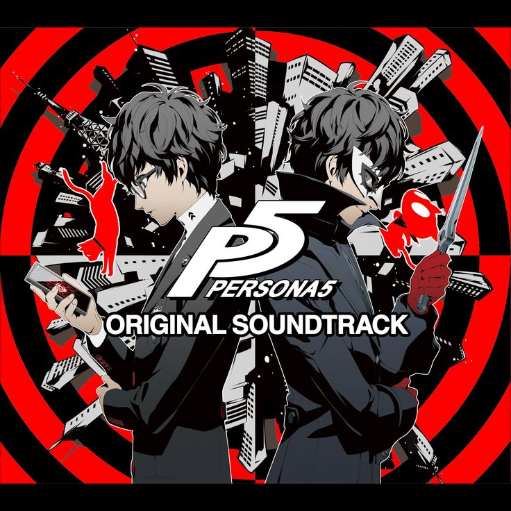
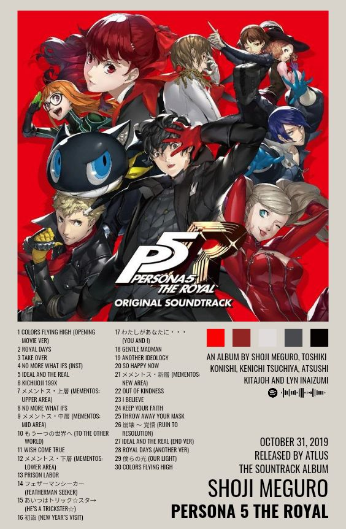
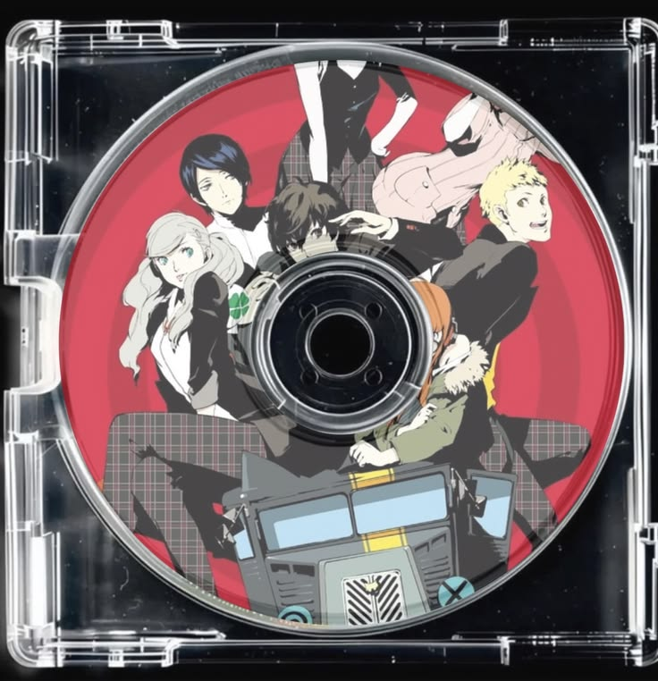

La bande-son est incroyable, on s'immerse dans le jeu à fond grâce à ses musiques, j'ai même téléchargé les musiques sur spotify et je les écoutes très souvent. Elle a été composée par Shoji Meguro, le compositeur de tous les jeux Persona.
La musique mélange plusieurs genres : du jazz, du funk, du rock et de la pop. Le résultat est super lors des combats, ça augmente l'attention et puis dans le monde réel c'est très reposant pour jouer. Les morceaux chantés sont interprétés par la chanteuse Lyn, que je ne connaissais pas avant.


Chaque lieu du jeu a sa propre musique : le café, l'école, les rues, les palais. Cela donne une vraie identité à chaque endroit et on finit par reconnaître les moments du jeu rien qu'en entendant la mélodie.
Les deviennent aussi incroyable grâce à la musique, même en les écoutant longtemps. La musique accompagne aussi très bien les menus du jeu.
Vous pouvez retrouver la bande originale du jeu sur Spotify en cliquant ici :